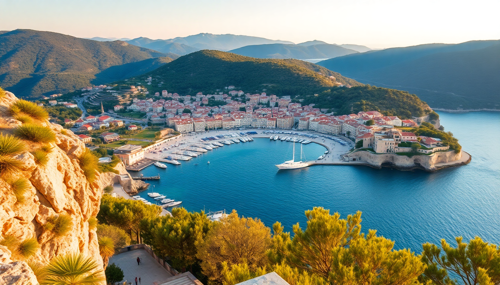

Best Beaches in Croatia: Dalmatian Coast & Islands Guide

I spent three weeks hopping between pebbly coves and cliffside swimming spots along the Dalmatian Coast, from Dubrovnik up to Zadar. Here’s what I actually found worth your time—and what you can skip.
What are the best beaches near Dubrovnik?
Dubrovnik’s Old Harbour is stunning, but the beaches inside the city walls are cramped. Head south instead.
Banje Beach is the most famous, right under the city walls. It’s fine for an afternoon dip, but the pebbles are brutal on bare feet, and the sunbeds cost €30 a pair. We lasted an hour.
Better options are a short ferry or drive away:
- Sveti Jakov Beach – A 20-minute walk downhill from the Old Town. Fewer crowds, cleaner water, and a view of the city walls from the water. Bring water shoes.
- Lokrum Island – A 15-minute ferry from Dubrovnik’s port. The main beach is rocky, but the “dead sea” saltwater pool on the island’s north end is a surreal swimming spot. Entry to the island is about €15.
- Cavtat – A 30-minute bus ride south. The waterfront promenade has small pebble beaches and calm water. We ate grilled squid at Konoba Galija right on the water.
Which beaches around Split are worth the trip?
Split’s city beaches—Bačvice—are shallow, sandy, and packed with teenagers playing picigin (a local handball-in-the-water game). Fun to watch for ten minutes, but not a swim spot.
The real beaches are a short drive or ferry away.
- Kašjuni Beach – A 20-minute walk from Split’s Marjan Hill. Small pebbles, pine trees for shade, and a Beach Bar Kašjuni that serves cold Ožujsko beer. We spent an entire afternoon here.
- Žnjan Beach – Longer stretch of pebbles, less scenic, but has free public showers and a decent Konoba Žnjan for grilled fish.
- Beach at Stobreč – 15 minutes east of Split by bus. Quieter, with a long promenade and a small harbour. We swam off the rocks near Restaurant Dvor for a more local vibe.
What are the best beaches on Hvar Island?
Hvar Town is a tourist machine—yachts, clubs, and €15 cocktails. The beaches around the town are overcrowded. Go elsewhere on the island.
- Dubovica Beach – A 15-minute drive or 45-minute walk east of Hvar Town. A pebble cove with a small stone house at the back. Water is crystal clear. Get there by 9 AM or you’ll be on the rocks.
- Mlini Beach – Near the village of Sveta Nedjelja, on the south coast. Accessible only by a steep path or boat. We kayaked here from Hvar Town (rentals at Kayak Hvar cost about €40 for the day). Totally worth the paddle.
- Pokonji Dol Beach – Just east of Hvar Town. Small, sandy, and usually less packed than the town beaches. Has a beach bar with decent pljeskavica (Balkan burger) for €8.
- Palmižana Beach – On the Pakleni Islands, a 20-minute water taxi from Hvar Town. The beach itself is fine, but the whole island is a resort. We preferred the quieter coves on the west side of the island.
What beaches near Zadar are actually good?
Zadar’s city beaches—Kolovare and Borik—are functional but nothing special. The real draw is the coastline north and south.
- Nin Beach – 20 minutes north of Zadar. A long, shallow sandy beach that’s great for families. The water is warm and only waist-deep for 100 metres out. We saw people walking out to the small island of St. Nicholas at low tide.
- Sakarun Beach – On the island of Dugi Otok, a 1-hour ferry from Zadar. White pebbles, turquoise water, and pine trees. It’s a bit of a trek, but we had the beach nearly to ourselves on a Tuesday in July. Ferry costs about €10 each way.
- Veli Žal Beach – Near the village of Premuda, also on Dugi Otok. Smaller and rockier than Sakarun, but the water is even clearer. We snorkelled here and saw a small octopus.
Are the beaches on Brač better than the mainland?
Brač is famous for Zlatni Rat, the golden horn beach that changes shape with the wind. It’s iconic, but it’s also a zoo in summer—hundreds of umbrellas, jet skis, and a constant parade of tour boats.
Skip Zlatni Rat on weekends. Go on a weekday morning, or better, head to:
- Pustinja Blaca – Not a beach, but a 15th-century hermitage accessible by a 2-hour hike from the village of Milna. We swam in a small cove below the monastery. No crowds, just rocks and silence.
- Murvica Beach – A 30-minute walk from Bol (the town near Zlatni Rat). Small pebble beach with a bar that sells fritule (Croatian doughnuts) for €3. Good spot to watch the sunset.
- Lovrečina Bay – On the north coast of Brač, near the village of Postira. Sandy bottom, shallow water, and a small pine forest. We had it almost to ourselves in late June.
What about the beaches on Korčula and Vis?
Korčula and Vis are further south, less developed, and have some of the best swimming in Croatia.
Korčula:
- Vela Pržina Beach – Near the village of Lumbarda, a 20-minute bus from Korčula Town. Long, sandy, with a beach bar that does good dalmatinski pršut (prosciutto) plates for €10.
- Pupnatska Luka – A pebble cove surrounded by cliffs. We swam here after a hike from the village of Pupnat. Water is deep and cold even in August.
Vis:
- Stiniva Beach – A narrow cove between cliffs, accessible only by a steep path or boat. The beach is tiny (about 20 metres wide) and gets crowded by 11 AM. We arrived at 8 AM and had it to ourselves for an hour.
- Srebrna Beach – A 30-minute walk from Vis Town. Pebble beach with a small bar. The water is a deep blue-green. We snorkelled along the rocks and saw plenty of fish.
- Budikovac Island – A 20-minute boat taxi from Vis Town. The beach is a small sandbar with turquoise water on both sides. Costs about €15 for the round trip.
FAQ
What’s the best time of year to visit Dalmatian beaches? Late May to early June or September. July and August are packed, prices double, and the water is still warm in September. I visited in late June and found manageable crowds at most beaches except Zlatni Rat and Banje.
Do I need water shoes for Croatian beaches? Yes, absolutely. Almost all beaches are pebble or rock. I wore Speedo water shoes from Decathlon (€12) and was grateful every day. Flip-flops don’t cut it on the sharp stones at Sveti Jakov or Dubovica.
Can I reach these beaches without a car? Most are accessible by bus, ferry, or foot. Dubrovnik’s Sveti Jakov is a 20-minute walk. Hvar’s Dubovica is a 45-minute walk from town. Vis’s Stiniva requires a 30-minute hike. For Dugi Otok’s Sakarun, you need a ferry from Zadar and then a local bus. Always check ferry schedules in advance—they change seasonally.
Conclusion
- Banje Beach in Dubrovnik is overpriced and overcrowded—skip it for Sveti Jakov or Lokrum.
- Split’s Bačvice is a local scene, not a swimming beach. Head to Kašjuni or Stobreč instead.
- Hvar’s Dubovica and Mlini are worth the effort; Hvar Town beaches are not.
- Zadar’s Nin Beach is great for families; Sakarun on Dugi Otok is the real gem.
- Brač’s Zlatni Rat is iconic but touristy—go early or skip it for Murvica or Lovrečina.
- Korčula’s Vela Pržina and Vis’s Stiniva are the best beaches I found on the islands.